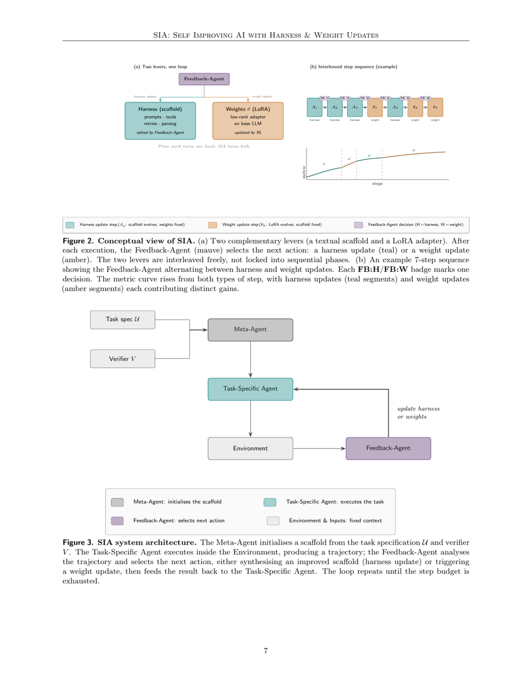
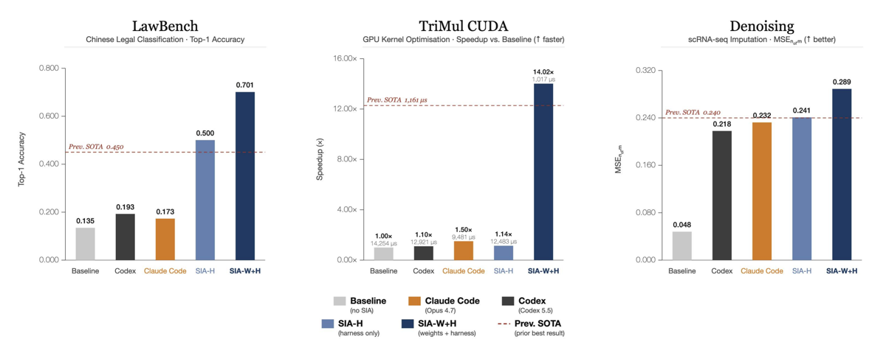
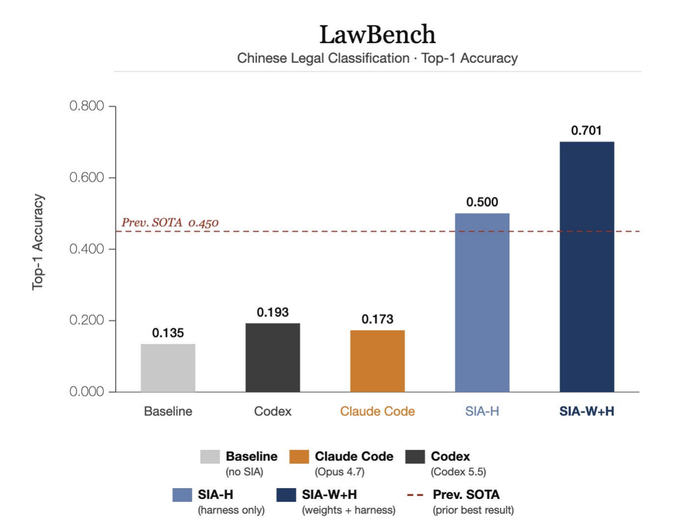

TL;DR. Un méta-agent LLM (Claude Sonnet 4.6) écrit le scaffold d'un agent tâche-spécifique (gpt-oss-120b), puis choisit à chaque étape entre réécrire le scaffold (poids gelés) et mettre à jour les poids par RL (scaffold gelé) ; sur 3 tâches, ajouter le levier poids bat le scaffold seul.
Claim principal, formulé précisément [Abstract, §1.3, §7.1] : sur 3 benchmarks (LawBench 191 classes, AlphaEvolve TriMul, débruitage MAGIC scRNA-seq), SIA-W+H > SIA-H strictement, avec +20,1 pp (70,1 % vs 50,0 %), −91,9 % de runtime (12 483 → 1 017 µs) et +20 % de mse_norm (0,241 → 0,289). Claim secondaire [§7.4] : les updates de poids produisent de la « connaissance internalisée » qu'aucune édition de scaffold n'atteint.
⚠️ Mon évaluation d'emblée, parce qu'elle conditionne toute la lecture. Trois problèmes structurels :
1. Le reward RL est calculé sur le test split, qui est aussi la métrique rapportée [§6.3.1 : « rollouts — each a generated solution script executed against the test split »], alors que le même papier qualifie ce split de held-out [§6.1, §6.3.1]. Sur TriMul et débruitage, la colonne Train/Test vaut littéralement n/a [Tab. 2]. Il n'y a donc aucun nombre généralisable dans ce papier.
2. L'alternance libre entre les deux leviers, qui est la contribution annoncée, n'est jamais exécutée. Fig. 2b est étiquetée « (example) » ; le protocole réel est un basculement unique H→W [§6.2] et §9 le reconnaît (« coarse-grained rounds »).
3. Il n'existe pas de bras « poids seuls » (RL sur le scaffold initial $A_1$). Impossible d'attribuer quoi que ce soit au levier harness dans le système combiné — et les figures montrent que sur 2 tâches sur 3, SIA-H fait à peine mieux (ou moins bien) qu'un agent de code sur étagère.
Aucune annexe. Aucun prompt. Aucune courbe d'entraînement. 15 pages.
Trois benchmarks publics repris tels quels, choisis explicitement pour la comparabilité : « These benchmarks are commonly used to evaluate other self-improving AI systems; we run on them specifically to enable direct comparison against prior work » [§6]. Aucune tâche construite, minée ou générée par les auteurs. Ce qui est généré, c'est l'env (scaffold + boucle de dispatch + parser), pas les tâches.
| Tâche | Domaine | Train / Test | Métrique | SOTA antérieur | Vérifieur | Source |
|---|---|---|---|---|---|---|
| LawBench (191-class) | juridique CN | 5 332 / 913 | top-1 accuracy | 0,450 | « held-out test-split grader » | [Tab. 2] |
| AlphaEvolve TriMul | CUDA / H100 | n/a / fixed input shape | score = 1500/runtime | 1,292 | « H100 timing » | [Tab. 2] |
| MAGIC scRNA-seq Denoising | single-cell | n/a / pancreas scRNA-seq | mse_norm ∈ [0,1], ↑ |
0,24 | « MAGIC reference against ground truth » | [Tab. 2] |
LawBench [§6.3.1] : descriptions factuelles de cas pénaux chinois réels → 1 chef d'accusation parmi 191 catégories du droit statutaire chinois. Les auteurs insistent sur la granularité (sous-types de vol : vol ordinaire / vol de biens publics / détournement ; grades de coups et blessures ; variantes de fraude), et notent qu'un tirage aléatoire est correct « less than one percent of the time ». Cité Fei et al., 2023.
⚠️ Portée : le papier évalue une sous-tâche de classification à 191 classes, pas LawBench comme benchmark multi-tâches. L'abstract dit « 25.1% over prior SOTA on LawBench » ; le tableau de setup dit « LawBench (191-class) » [Tab. 2]. Sur-généralisation interne au papier (voir §7.0).
Aucun, au sens habituel. Le pipeline est celui de l'env : 1. Spécification de tâche $\mathcal{U}$ (description du benchmark + instances d'exemple) et implémentations de référence $\mathcal{R}$ fournies avec le benchmark → Meta-Agent $\mathcal{M}$ → scaffold initial $A_1 = \mathcal{M}(\mathcal{U}, \mathcal{R})$ [§3.2]. 2. Exécution de $A_g$ sur $\mathcal{D}$ en sandbox, capture de la trajectoire $\tau_g$ [§3.3]. 3. Analyse par le Feedback-Agent $\mathcal{F}$ → soit $A_{g+1} = \mathcal{F}(A_g, \tau_g, \mathcal{E}_g, \mathcal{U})$, soit un update de poids [§5.1, §5.3].
LawBench : 5 332 train / 913 test [Tab. 2, §6.3.1]. TriMul : une seule instance (« fixed input shape ») [Tab. 2]. Débruitage : un seul dataset (pancreas, Baron et al. 2016) [Tab. 2, §6.3.3]. Distribution de difficulté : non précisé pour les trois.
⚠️ Deux des trois « benchmarks » sont des instances uniques d'optimisation, pas des distributions de tâches. Le RL y optimise directement l'objet rapporté. Le mot « generalisation » n'apparaît nulle part dans le papier.
Aucun filtrage par pass@k ni par modèle tiers. Non précisé — le concept n'est pas abordé.
Aucun curriculum sur les tâches. Le seul ordonnancement est celui des leviers (H puis W), traité en §4 et §5 ci-dessous.
n/a en colonne Train/Test [Tab. 2]).Aucune. Pas de cold start SFT dans les runs rapportés. Le papier mentionne le Best-of-$N$ behavioural cloning comme « phase-zero cold-start » possible [§7.3], mais dans la liste des algorithmes pas utilisés sur ces trois tâches (voir §4).
Aucune annotation, aucun expert, aucune heure rapportée — c'est le point de vente du papier (« given only a task specification and a verifier … without further human intervention » [§1.1]). ⚠️ Non chiffré : le coût d'écriture des trois spécifications $\mathcal{U}$ et des trois graders $V$ reste humain et non précisé.
Le papier définit le scaffold (= harness) comme l'union de : - System prompt — texte fixe préfixé à chaque appel modèle ; - Tool-dispatch logic — code Python qui parse les tool-calls et les route vers des handlers : « file I/O, code execution, dataset lookup, grader calls » ; - Answer extraction — code qui convertit la réponse du modèle (« typically a structured trailing block ») en prédiction au format du benchmark ; - Grader — le vérifieur déterministe invoqué par l'orchestrateur.
Formule : « every part of the agent that is fixed code rather than model output » [§3.1].
Non précisé. Aucun format d'observation, aucun template de prompt, aucun exemple. Le papier ne donne ni le system prompt initial, ni un scaffold $A_g$, ni un extrait de trajectoire. ⚠️ Pour un papier dont l'objet est la réécriture de scaffolds, aucun scaffold n'est montré.
Quatre catégories de handlers seulement [§3.1, cité plus haut]. Aucune signature d'outil n'est fournie.
Outils émergents observés, par tâche [§7.2] : | Tâche | Outils construits par le Feedback-Agent | |---|---| | LawBench | couche d'answer-extraction structurée + re-ranker SVC sur les top candidats du modèle | | TriMul | parser d'erreurs de compilation renvoyant les diagnostics CUDA en contexte structuré + harness de timing renvoyant le runtime médian | | Denoising | driver de configuration batché + outil de parsing de résultats organisant les paires (parameter-set, score) |
Les auteurs concluent : « In all three cases, the changes are software-engineering improvements: new tools, tighter output parsers, smarter retry logic » [§7.2] — ce qui confirme le reproche qu'ils adressent au silo harness en introduction (« scaffold edits concentrate on software-engineering hygiene … and rarely deliver domain-specific reasoning » [§1.2]).
⚠️ Point critique pour LawBench : le scaffold gagnant est « a TF-IDF + LinearSVC pipeline, iteratively tuning the character n-gram range and regulariser C » [§6.3.1], plus un re-ranker SVC [§7.2]. Le 70,1 % est donc produit par un classifieur classique écrit par le LLM, pas par du raisonnement juridique du LLM. Le papier n'en décompose jamais la contribution (part des prédictions venant du SVC vs du modèle : non précisé), ce qui n'empêche pas §7.4 d'attribuer le gain à « the model's disambiguation of adjacent categories … without any prompt-side hint ».
Multi-turn implicite (boucle de tool-dispatch, retry logic). Horizon typique et maximal : non précisé. Gestion du contexte long (troncature, résumé, mémoire) : non précisé.
Le Feedback-Agent, lui, reçoit la trajectoire complète : « every prompt, model response, tool call, tool result, and extracted answer for every task instance » [§3.3], explicitement pour « diagnose specific failure modes rather than react to summary statistics ». ⚠️ Sur 913 instances de test, cela représente un contexte énorme ; comment il est tronqué ou résumé avant d'entrer dans Claude Sonnet 4.6 est non précisé.
Sandbox avec « read-only access to the dataset directory, read/write access to a working directory » [§3.3]. C'est tout. Non précisé : conteneur, image, déterminisme, politique de reset, timeouts, limites mémoire/CPU. Pour TriMul, exécution sur H100 [§6.3.2] ; les updates de poids passent par « Modal » [§4.3].
Pas de politique fixe : la retry logic et le parsing d'erreurs sont précisément ce que le Feedback-Agent fait évoluer [§7.2]. Sorties mal formées : gérées par l'answer-extraction, elle aussi évolutive. Conséquence méthodologique ⚠️ : le taux d'erreur de parsing change entre générations, donc les scores de générations successives ne sont pas mesurés sous le même harness — ce qui est le sujet même du papier, mais jamais quantifié.
Aucun. Le papier n'en fournit pas, ni en corps ni en annexe (il n'y a pas d'annexe).
| Tâche | Vérifieur | Type | Déterministe | Correction vérifiée ? |
|---|---|---|---|---|
| LawBench | « held-out test-split grader » [Tab. 2] | exact match top-1 sur 191 classes | oui | n.a. (labels gold) |
| TriMul | « H100 timing » [Tab. 2], score = 1500/runtime | mesure physique de runtime | ⚠️ bruit de timing non discuté ; le harness évolué renvoie le runtime médian [§7.2] | ⚠️ non précisé — voir ci-dessous |
| Denoising | « MAGIC reference against ground truth » [Tab. 2] | mse_norm ∈ [0,1] contre vérité terrain |
oui | n.a. |
Aucun LLM-as-judge, aucun reward model, aucune rubrique nulle part dans le papier. Les sous-questions « si juge LLM : modèle, prompt, rubriques » sont donc sans objet — ce qui est aussi la raison principale pour laquelle le papier est peu transférable au juridique long-format (§9).
Outcome-only dans les trois cas. Binaire pour LawBench (bonne classe ou non — « the reward signal is a clean outcome-based scalar (correct charge or not) » [§6.3.1]), continu pour TriMul et débruitage. Pas de process reward, pas de crédit partiel, pas d'agrégation multi-critères. Cohérent avec le cadrage §1.1 : « given only a task specification and a verifier ».
Aucun terme de format, de longueur, de pénalité ou de bonus n'est mentionné.
Jamais mesurée, pour aucune des trois tâches. Pas d'accord inter-annotateurs, pas de taux de faux positifs/négatifs, pas de validation. Vu que les trois vérifieurs sont programmatiques, l'absence est partiellement légitime — sauf pour TriMul.
⚠️ TriMul : le point le plus préoccupant du papier. Le vérifieur déclaré est « H100 timing » [Tab. 2] et le score est 1500/runtime [§6.3.2], c'est-à-dire une fonction purement de vitesse. Le papier mentionne que « most generated kernels either fail to compile » [§6.3.2], donc il existe une porte de compilation. Mais nulle part il n'est dit que la sortie numérique du kernel est comparée à une référence. Un reward mono-critère « plus vite = mieux », sans gate de correction énoncé, est le cas d'école du reward hacking (kernel qui retourne tôt, qui saute des blocs, qui écrit un tenseur incorrect). Le gain rapporté est un 14,02× obtenu par RL directement contre ce compteur, sur une instance unique, sans split. Le papier ne mentionne aucune vérification de correction et aucun audit du kernel final. Non précisé — et c'est l'absence la plus lourde du papier.
Le vérifieur n'a jamais été attaqué ni testé contre le hacking. Le seul texte sur le sujet est l'argument a priori de §8 (voir §5 du mémo).
Il n'y a pas de sous-section « Weight updates » dans la section Méthode. §5 contient §5.1 Overview, §5.2 System components, §5.3 Harness updates — puis passe directement à §6 Experiments. Les détails RL n'apparaissent qu'en §7.3, dans la Discussion, et sous forme d'observations rétrospectives, pas de protocole.
Il n'y a pas d'algorithme fixe. « The Feedback-Agent does not run a fixed RL procedure » [§7.3]. Le choix de l'algorithme est une sortie du Feedback-Agent (Claude Sonnet 4.6), conditionnée sur les dynamiques de reward observées.
Algorithmes effectivement observés sur les 3 tâches rapportées [§7.3] : | Tâche | Algo | Justification donnée par les auteurs | |---|---|---| | LawBench | PPO + GAE | reward scalaire propre, rollouts parallèles bon marché ; value head $V_\phi$ → avantages par token sur le script généré ; surrogate clippé $\min(r_t\hat{A}_t, \text{clip}(r_t, 1\pm\varepsilon)\hat{A}_t)$ « prevents the policy from drifting far from a working baseline » [§6.3.1] | | TriMul | Entropic advantage weighting | histogramme de reward très asymétrique à droite ; $w_i \propto \exp(r_i/\beta)$, $\beta$ adaptatif ; réutilise la loss de Yuksekgonul et al. 2026 [§4.2, §6.3.2, §7.3] | | Denoising | GRPO | rollouts bon marché, vérifieur en fin d'épisode ; $\hat{A}_i = (r_i - \bar{r})/\sigma_r$, pas de value network [§6.3.3, §7.3] |
⚠️ §7.3 énumère six algorithmes, dont trois ne sont utilisés sur aucune des tâches rapportées : REINFORCE + KL-to-base, Best-of-$N$ behavioural cloning, DPO. Les auteurs le disent : « While this paper reports three tasks, we have been running SIA across a wider set of tasks not included here; the algorithm descriptions below reflect common patterns observed across that broader experimentation », et « A fuller treatment of algorithm selection across tasks is deferred to v2 » [§7.3]. ⚠️ meta.json indique que le document lu EST la v2 (version v2, updated 2026-05-28). Le renvoi est donc soit périmé, soit à une v2 qui n'existe pas. La moitié de la section 7.3 décrit des expériences non montrées.
Deux valeurs dans tout le papier : - LoRA rank $r = 32$ [§4.3, §6.1] - learning rate $4 \times 10^{-5}$ [§6.1]
Non précisé, exhaustivement : coefficient KL $\alpha$ et politique de référence (le symbole $\pi_{\theta_0}$ est défini dans la table des symboles [§3.4] mais le KL n'apparaît que dans la description de REINFORCE, non utilisé ici) · taille de groupe $G$ (symbole défini [§3.4], valeur jamais donnée) · $\varepsilon$ de clipping · $\gamma$, $\lambda$ de GAE · seuil de floor sur l'effective sample size pour $\beta$ · température de sampling · longueur max de génération · batch size · nombre de rollouts par step · nombre de steps RL · nombre de générations $G_{\max}$ (symbole défini [§3.4], jamais chiffré) · architecture de la value head · schéma de normalisation des avantages au-delà des formules génériques · on/off-policy et staleness.
⚠️ Le papier n'est pas reproductible, même approximativement. Aucune des trois recettes RL ne peut être relancée.
Une seule phrase, générique : le clipping PPO « prevents the policy from drifting far from a working baseline » [§6.3.1]. Pour l'entropic weighting : « The temperature is tuned online so that the effective sample size stays above a floor threshold, preventing collapse onto a single trajectory » [§7.3] — seuil non précisé.
Instabilités rencontrées : aucune rapportée. Ce qui a été essayé puis abandonné : rien rapporté. ⚠️ Pour trois runs RL avec trois algorithmes différents sur trois domaines, zéro incident est peu crédible et signale surtout une absence de journalisation.
H100, via « Modal » [§4.3, §6.3.2]. GPU-heures : non précisé. Durée : non précisé. Coût : non précisé. Nombre de GPU : non précisé.
⚠️ Formulation ambiguë : « Weight updates are executed on H100 GPUs via Modal, our RL training platform, which handles rollout generation, reward assignment, and gradient updates within a single managed pipeline » [§4.3]. Modal est un fournisseur commercial de compute serverless tiers ; le possessif « our » n'est étayé par aucune affiliation déclarée (les auteurs sont Hexo Labs et Oxford [maketitle]). Soit c'est un abus de langage pour « la plateforme que nous utilisons », soit c'est une revendication non fondée. À ne pas reprendre tel quel.
Aucune courbe d'entraînement dans le papier. Ni reward, ni longueur de réponse, ni entropie, ni KL, ni pass rate.
⚠️ La seule « courbe » est le panneau Fig. 2b, une spline TikZ dessinée à la main (\draw[...] (0.0,0.15) .. controls (0.7,0.35) ... dans le source), sans axes chiffrés, légendée « An example 7-step sequence ». Ce n'est pas une donnée. Un lecteur pressé la lira comme un résultat.
Un seul item, entièrement théorique, en §8 Limitations, intitulé « Coupled co-evolutionary Goodhart ». Je le recopie car c'est la contribution conceptuelle réelle du papier :
« Harness search and RL weight updates both optimise against the same fixed verifier $V$. Each pass shapes the distribution the other sees: the harness finds scaffolds that are easy for the current policy to exploit; the weights train on data collected through a scaffold that will subsequently change. The joint fixed point of this coupled system is a Nash equilibrium between two optimisers that are blind to each other's update history, not a point that maximises $V$ on out-of-distribution scaffolds or novel policies. Standard Goodhart analyses assume a single optimiser; the two-lever setting produces a coupled variant whose fixed points can appear strong on the training verifier while being fragile under any perturbation to either component. » [§8]
Comportement → détecté comment → corrigé comment : aucun des trois. L'argument est posé, jamais instancié, jamais mesuré, jamais corrigé. Il n'y a aucun cas empirique de reward hacking, aucun failure mode observé, aucun comportement émergent négatif rapporté dans les trois runs.
Elle n'est pas crédible, et le design du reward explique pourquoi.
np.clip + np.rint comme « enforcing a biological invariant that is trivially correct yet absent from any prior scaffold version » [§6.3.3, §7.4]. ⚠️ Lecture alternative, que le papier n'envisage pas : arrondir à des entiers non négatifs est une transformation alignée sur la forme de la métrique (mse_norm contre des comptages entiers), pas nécessairement une intuition biologique. C'est un bon exemple de gain dont l'interprétation « le modèle a appris la biologie » n'est pas séparable de « le modèle a appris la métrique ».np.clip + np.rint sur le débruitage, apparu au premier checkpoint de weight update, jamais produit par aucune itération de scaffold [§6.3.3, §7.4]. C'est l'anecdote la plus convaincante du papier.Tout ce que le papier dit tient en deux phrases : - « Weight updates are executed on H100 GPUs via Modal … which handles rollout generation, reward assignment, and gradient updates within a single managed pipeline » [§4.3]. - Les rollouts LawBench sont « cheap to generate in parallel » [§6.3.1] ; les rollouts GRPO permettent « hundreds of completions … scored in a single forward pass » [§7.3, description générique de GRPO].
Non précisé : débit de rollouts, sync vs async, degré de parallélisme des environnements, goulots d'étranglement, coût par step, coût par rollout, coût total, durée des runs, nombre d'appels Claude Sonnet 4.6 du Feedback-Agent (qui consomme des trajectoires complètes sur 913 instances — probablement le vrai coût dominant, jamais chiffré).
Infrastructures citées en contexte mais non utilisées : verl/HybridFlow, SkyRL, LLaMA-Factory, Axolotl [§4.3].
| Chiffre annoncé | Où il est annoncé | Source dans le papier | Verdict |
|---|---|---|---|
| « 25.1% over prior SOTA on LawBench » | Abstract | Tab. 3 : 70,1 % vs 45,0 % → +25,1 points. Gain relatif = +55,8 % | sur-généralisé / trompeur : c'est un écart en points présenté comme un « % », dans la même phrase que deux autres « % » qui sont, eux, relatifs (voir lignes suivantes) |
| « on LawBench » (portée) | Abstract, §1.3 | Tab. 2 scope explicitement : « LawBench (191-class) » ; §6.3.1 décrit une tâche unique de classification de chefs d'accusation | sur-généralisé : SOTA revendiqué sur une sous-tâche, annoncé sur le benchmark |
| « 12.4% faster GPU kernels than prior SOTA (1,017 vs 1,161 µs) » | Abstract | (1161−1017)/1161 = 12,40 %. Le 1 161 µs n'apparaît qu'implicitement : Tab. 2 donne reward SOTA 1,292 et score = 1500/runtime → 1500/1,292 = 1161,0 | confirmé (relatif) |
| « 20.4% over prior SOTA on denoising » | Abstract | (0,289−0,240)/0,240 = 20,4 %. Tab. 3 : 0,289 vs 0,240 | confirmé (relatif) |
| « Combining both levers outperforms scaffold iteration alone on all three benchmarks » | Abstract, §7.1 | Tab. 3 : 70,1 > 50,0 · 1,475 > 0,120 · 0,289 > 0,241 | confirmé — mais l'affirmation symétrique (harness au-delà des poids) n'est jamais testée : pas de bras W-only |
| « Harness updates make the model agentic … weight updates build the domain intuition that no prompt or scaffold can instil » | Abstract | §7.4 : trois anecdotes qualitatives, une seule concrète (np.clip+np.rint). Aucune mesure, aucune ablation |
non étayé (revendication mécaniste sans mesure) |
| « 25.1% on LawBench (70.1% vs 45.0%) » | §1.3 | Tab. 3 | confirmé arithmétiquement |
| « 0.289 vs 0.240 mse_norm » | §1.3 | Tab. 2 (SOTA 0,24), Tab. 3 (0,289) | confirmé |
| « levelled off at 50.0%, a 36.5 percentage point gain over the initial run » | §6.3.1 | Tab. 3 : 50,0 − 13,5 = 36,5 | confirmé |
| « an additional 20.1 percentage point gain » | §6.3.1 | Tab. 3 : 70,1 − 50,0 = 20,1 | confirmé |
| « best runtime of 12,483, a 1.14× speedup » | §6.3.2 | Fig. 1 : SIA-H = 1,14×, 12 483 µs ; baseline 14 254 µs → 14 254/12 483 = 1,142 | confirmé (via figure ; absent du texte et des tableaux) |
| « a final speedup of 14.02× » | §6.3.2 | Fig. 1 : 14 254/1 017 = 14,016 | confirmé (via figure uniquement) |
| « a 91.9% reduction from the harness-only peak » | §6.3.2, §7.1 | (12 483 − 1 017)/12 483 = 91,85 % | confirmé (arrondi) |
| « a 20% gain over the harness-only best » (denoising) | §6.3.3, §7.1 | (0,289 − 0,241)/0,241 = 19,9 % | confirmé |
| Prior SOTA = 45,0 % / 1,292 / 0,240 | Tab. 2, Tab. 3, Fig. 1 | Aucune citation, aucun système nommé, aucune référence pour les trois valeurs | introuvable — les trois deltas headline reposent sur trois nombres sans provenance |
| « Each panel compares three operating points: Baseline, SIA-H, and SIA-W+H » | Légende Fig. 1 (idem Fig. 3, 4, 5) | Les figures contiennent cinq barres : Baseline, Codex (Codex 5.5), Claude Code (Opus 4.7), SIA-H, SIA-W+H | contredit : légende (3) vs figure (5) |
| Codex = 0,193 · Claude Code = 0,173 (LawBench) ; 1,10× / 1,50× (TriMul) ; 0,218 / 0,232 (denoising) | Figures uniquement | Jamais mentionnés dans le corps du texte, ni dans Tab. 3, ni dans la discussion | introuvable dans le texte — et défavorables : sur TriMul, SIA-H (1,14×) perd contre Claude Code (1,50×) ; sur débruitage, SIA-H (0,241) est à égalité avec Claude Code (0,232) et avec le SOTA (0,240) |
| « A fuller treatment … is deferred to v2 » | §7.3 | meta.json : le document lu est la v2 (updated 2026-05-28) | incohérent |
| Alternance libre des leviers (« interleaved freely, not locked into sequential phases ») | §5.1, légende Fig. 2 | §6.2 : « the Feedback-Agent begins with scaffold iteration and switches to weight updates once harness progress stalls » pour les trois tâches ; §9 : « The current SIA loop alternates … in discrete, coarse-grained rounds » | contredit : la capacité annoncée n'est exercée dans aucun run ; Fig. 2b est étiquetée « (example) » |
Verdict 7.0 : l'arithmétique interne est correcte partout, mais la couche de présentation ne l'est pas — trois sens différents de « % » dans une phrase d'abstract, deux baselines agents cachés dans les figures et absents du texte (dont un qui bat SIA-H), des SOTA sans provenance, un mécanisme annoncé non exercé, et un renvoi « v2 » dans la v2. Case coherence : fausse.
| Tâche | Initial ($A_1$) | Codex 5.5 | Claude Code (Opus 4.7) | Prev. SOTA | SIA-H | SIA-W+H | Δ (W+H − H) |
|---|---|---|---|---|---|---|---|
| LawBench top-1 | 13,5 % | 19,3 %* | 17,3 %* | 45,0 % | 50,0 % | 70,1 % | +20,1 pp |
| TriMul (reward) | 0,105 | 1,10×* | 1,50×* | 1,292 | 0,120 (1,14×) | 1,475 (14,02×) | 12 483 → 1 017 µs |
Denoising mse_norm |
0,048 | 0,218* | 0,232* | 0,240 | 0,241 | 0,289 | +0,048 |
* barres présentes uniquement dans les figures [Fig. 1, 3, 4, 5], jamais dans Tab. 3 ni dans le texte. Runtimes TriMul lus sur Fig. 1 : baseline 14 254 µs, Codex 12 921, Claude Code 9 481, SIA-H 12 483, SIA-W+H 1 017.
⚠️ Lecture qui ne figure pas dans le papier : sur 2 tâches sur 3, toute la machinerie d'évolution de harness (SIA-H) n'apporte rien de plus qu'un agent de code sur étagère — elle perd contre Claude Code sur TriMul (1,14× vs 1,50×) et l'égale sur le débruitage (0,241 vs 0,232, tous deux au niveau du SOTA 0,240). Le seul levier qui produit les chiffres du titre est le levier poids, entraîné contre le split rapporté. Le titre du papier met pourtant le harness en premier.
Aucune mesure OOD. Aucun transfert mesuré. Pas de transfert entre les trois envs, pas d'évaluation du scaffold évolué sur d'autres instances, pas d'évaluation du checkpoint LoRA hors de sa tâche. Deux tâches sur trois n'ont même pas de split [Tab. 2]. Le mot « generalisation » n'apparaît pas dans le papier ; §8 reconnaît que les points fixes « can appear strong on the training verifier while being fragile under any perturbation to either component » — sans le tester.
Une seule : SIA-H vs SIA-W+H [Tab. 3, §7.1]. Elle isole correctement le levier poids (même scaffold, même modèle de base, ajout des updates LoRA).
Manquant, et c'est décisif : - ❌ Pas de bras W-only (RL sur le scaffold initial $A_1$, harness gelé). Sans lui : impossible de savoir si l'évolution de harness contribue quoi que ce soit au résultat final, et impossible de répondre à la question « faut-il faire évoluer le harness avant de faire du RL ? ». - ❌ Pas d'ablation du choix d'algorithme RL (PPO vs GRPO vs entropic sur la même tâche) — alors que la sélection adaptative d'algorithme est présentée comme une capacité du système [§5.1, §7.3]. - ❌ Pas d'ablation du Feedback-Agent (trajectoire complète vs métriques agrégées), alors que §3.3 en fait un point de différenciation explicite. - ❌ Pas d'ablation de la « sample-task regularisation » [§5.3].
Aucun. Un seul modèle de base (gpt-oss-120b), un seul rang LoRA (32), une seule taille, trois tâches. Effet du nombre de générations, du budget de steps, du compute : non précisé (aucun budget n'est même chiffré).
grep -niE 'github|http|url\{|open.?sourc|code (is )?(available|released)' → aucun résultat). Pas de code, pas de poids LoRA, pas de scaffolds, pas de prompts, pas d'annexe. Deux hyperparamètres publiés sur ~25 nécessaires. Le domaine hexolabs.ai ne répond pas (curl → code 000). Irreproductible.evidence = 1/6 — seule ablation est vraie. evidence_manquant: [baselines, variance, coherence, eval, repro].
À répliquer — et en l'état, à ne pas citer pour ses chiffres.
Le papier pose une bonne question (les deux leviers doivent-ils être actionnés ensemble ?) et formule une bonne mise en garde (le Goodhart couplé de §8 est, à ma connaissance, l'énoncé le plus net de ce risque). Mais : - la contribution annoncée — l'entrelacement libre des deux leviers — n'est exécutée dans aucun run ; le protocole réel est un basculement unique H→W que le papier lui-même range en Future Work [§9] ; - les gains headline viennent d'un RL optimisé contre le split rapporté, sur deux instances uniques et un split violé ; - les seules baselines réelles sont cachées dans les figures et l'une d'elles bat SIA-H ; - rien n'est reproductible.
⚠️ La combinaison « aucune annexe + deux hyperparamètres + zéro courbe d'entraînement + une courbe dessinée à la main + des baselines non discutées dans les figures + un renvoi à une v2 depuis la v2 » indique un papier écrit vite pour planter un drapeau sur une idée. L'idée vaut la lecture ; l'exécution ne soutient aucune des trois affirmations chiffrées de l'abstract au-delà de leur arithmétique.

Ce qu'il faut voir : (a) l'exclusion mutuelle, qui est le vrai contenu méthodologique : encadré teal = « Harness update step ($A_g$: scaffold evolves, weights fixed) », encadré ambre = « Weight update step ($\theta_k$: LoRA evolves, scaffold fixed) ». Les deux leviers ne bougent jamais simultanément. (b) la séquence $A_1, A_2, A_3, \theta_1, A_4, \theta_2, \theta_3$ avec ses badges FB:H / FB:W — c'est l'illustration d'une capacité, pas un run : le titre du panneau dit « (example) », et §6.2 précise que les trois tâches réelles font H…H puis W…W. La courbe « metric vs steps » sous (b) est une spline TikZ dessinée à la main, sans axes chiffrés : ce n'est pas une donnée. Fig. 3 : noter que le Verifier $V$ entre uniquement dans le Meta-Agent au démarrage et que la boucle ne contient aucun mécanisme de protection du vérifieur — c'est exactement la topologie que §8 décrit comme un Goodhart couplé.

Ce qu'il faut voir : cinq barres par panneau, alors que la légende LaTeX de cette même figure annonce « three operating points » [légende Fig. 1]. Les deux barres Codex (Codex 5.5) et Claude Code (Opus 4.7) n'apparaissent nulle part dans le texte du papier. Et elles sont gênantes : sur TriMul, SIA-H = 1,14× (12 483 µs) est battu par Claude Code = 1,50× (9 481 µs) ; sur Denoising, SIA-H = 0,241 est à égalité avec Claude Code = 0,232 et avec le SOTA = 0,240. Autrement dit, le levier harness — celui qui donne son titre au papier — n'apporte rien de mesurable au-delà d'un agent de code sur étagère sur 2 tâches sur 3. Tout l'écart vient de la barre bleu foncé (SIA-W+H), produite par un RL entraîné contre le split rapporté [§6.3.1].

Ce qu'il faut voir : le saut 0,500 → 0,701 attribué aux poids. Le contexte à garder en tête, lui, est dans le texte et non dans la figure : le pipeline qui produit ces deux nombres est TF-IDF + LinearSVC avec un re-ranker SVC [§6.3.1, §7.2], et le reward qui a sélectionné le script est le score sur ces mêmes 913 instances [§6.3.1]. Noter aussi que Codex (0,193) et Claude Code (0,173) restent très en dessous du SOTA 0,450 : sur une classification à 191 classes, un agent qui écrit un classifieur entraîné domine nécessairement un agent qui classe en zero-shot — la figure compare deux régimes différents sans le dire.
Aucune figure de failure mode : le papier n'en contient aucune, et ne rapporte aucun failure mode empirique (§5 du mémo).
| Ingrédient | Choix du papier | Équivalent juridique (Gemini Law / Harvey LAB / Vals) | Transfert | Ce qui manque |
|---|---|---|---|---|
| Source des tâches | 3 benchmarks publics repris tels quels ; 2 sur 3 sont des instances uniques sans split [Tab. 2] | Requêtes de recherche juridique, mémos, revue contractuelle — distribution large, multi-juridictionnelle | non | Le papier ne construit aucune distribution de tâches ; rien à copier côté data |
| Vérifieur | Exact match 191 classes · timing H100 · MSE contre vérité terrain. Tous programmatiques et outcome-only [Tab. 2, §3.1] | Pas de vérité exacte : réponses longues, argumentées, avec citations à vérifier | non | C'est l'hypothèse fondatrice de SIA (« given only a task specification and a verifier » [§1.1]) et elle ne tient pas en droit. Le papier n'a aucun juge LLM, aucune rubrique, aucune mesure d'accord humain — donc rien sur le seul problème qui compte pour nous |
| Harness / outils | Dispatch Python (file I/O, code exec, dataset lookup, grader calls), réécrit par un LLM [§3.1] ; émergent : re-ranker SVC, parser d'erreurs, driver batché [§7.2] | Retrieval sur corpus versionné, vérificateur de citations, sélection de juridiction, formatage de mémo | adaptable (la topologie : un scaffold explicite, versionné, éditable séparément des poids) | Aucun scaffold n'est montré dans le papier. Aucune signature d'outil. Aucun exemple de trajectoire. La forme est transférable, le contenu n'existe pas |
| Séparation stricte des deux leviers | Exclusion mutuelle : harness update ⇒ poids gelés ; weight update ⇒ scaffold gelé [§5.1, §5.3, légende Fig. 2] | Geler la version du harness servant (tool set, config retrieval, citation-checker) pendant un run RL, et la pinner | direct | Rien ne manque — c'est une discipline d'ingénierie, pas un résultat. Le papier l'applique sans jamais mesurer ce qu'elle apporte |
| Déclencheur du basculement H→W | « once harness progress stalls » / « stalling reward » [§6.2, §6.3.1] | Basculer de l'itération scaffold au post-training quand les gains scaffold plafonnent | adaptable en principe | Aucun critère opérationnel : pas de seuil, pas de patience, pas de fenêtre, pas de test statistique. Sur un run à variance non mesurée, « stalled » n'est pas décidable |
| Algo RL | PPO+GAE / entropic weighting / GRPO, choisis par un LLM [§7.3] ; 2 hyperparamètres publiés (LoRA r=32, lr 4e-5) | GRPO ou variante, sur reward rubrique + vérification de citations | non | Irreproductible : ni KL, ni taille de groupe, ni clipping, ni steps, ni batch, ni température. Et la sélection d'algo par LLM n'est jamais ablatée — c'est une anecdote, pas une méthode |
| Curriculum | Aucun sur les tâches ; le seul ordonnancement est H-puis-W | Ordonner par juridiction / longueur / difficulté attestée | non | Absent du papier |
| Anti-hacking | Aucun mécanisme. Un argument théorique (« coupled co-evolutionary Goodhart » [§8]), zéro instanciation, zéro correction | Vérifieur de citations adversarial, held-out d'experts, rotation de rubriques | non — mais le diagnostic §8 est à garder | Le papier nomme le risque et ne fait rien contre. C'est néanmoins la formulation la plus nette que j'aie du risque spécifique au couplage harness/poids |
| Sélection du meilleur checkpoint | Best-of-trajectoire sur le split qui fournit aussi le reward [§6.2, §6.3.1] | — | contre-exemple à éviter | Le papier illustre exactement ce qu'il ne faut pas faire ; à citer comme anti-pattern interne |
L'exclusion mutuelle des deux leviers, plus le diagnostic de Goodhart couplé (§8), traités comme une contrainte de pipeline — pas comme un résultat.
Concrètement pour Gemini Law : le harness servant (outillage de retrieval, vérificateur de citations, parser de mémo) va évoluer pendant que tourne le post-training, parce que deux équipes distinctes travaillent en parallèle. §8 énonce exactement pourquoi c'est dangereux : « the weights train on data collected through a scaffold that will subsequently change », et le point fixe obtenu est « a Nash equilibrium between two optimisers that are blind to each other's update history ». La conséquence pratique — pinner la version du harness au moment de la collecte de rollouts, et journaliser cette version avec chaque checkpoint — est gratuite et ne se fait pas par défaut.
⚠️ Je transpose le cadrage, pas les résultats : sur le fond, la transférabilité est faible (2/5). Le résultat « juridique » du papier est un LinearSVC sur des n-grammes de caractères chinois, entraîné et évalué sur le même split ; il n'a aucun rapport avec de la recherche juridique long-format.
Grille 2×2 harness × poids, avec split de reward disjoint du split d'évaluation — l'expérience que SIA aurait dû faire et n'a pas faite (il manque la colonne W-only, cf. §7 Ablations).
Résultat attendu et ce qu'il tranche : - Si $\theta_{RL}$ gagne sous $H_0$, $H_1$ et $H_2$ → le gain est bien dans les poids ; la thèse de §7.4 (« domain intuition ») survit à un test que le papier n'a pas fait. - Si $\theta_{RL}$ ne gagne que sous $H_1$ → le RL a appris à exploiter ce scaffold ; c'est le Goodhart couplé de §8, observé pour la première fois. On apprend alors qu'il faut randomiser le harness pendant la collecte de rollouts (domain randomization sur le scaffold), ce que la littérature lue ici ne propose nulle part. - Si $H_1 + \theta_0 \approx H_0 + \theta_{RL}$ → le levier harness et le levier poids sont substituables sur cette tâche, et l'un des deux budgets est à réallouer.
Ma prédiction : chute significative de $\theta_{RL}$ sous $H_2$. C'est le risque n°1 d'un post-training co-développé avec un scaffolding mouvant, et il est mesurable pour le prix d'une éval.
La version du harness (tool set, config de retrieval, vérificateur de citations, prompt système servant) est-elle pinnée et journalisée avec chaque checkpoint RL de Gemini Law — et évalue-t-on le checkpoint sous au moins un harness qu'il n'a jamais vu pendant la collecte ? Si la réponse est non, on ne saura pas distinguer « le modèle a appris le droit » de « le modèle a appris ce scaffold-là », et toute refonte de l'outillage par l'équipe produit effacera silencieusement les gains de post-training. Corollaire budgétaire : combien de nos points sur Harvey LAB / Vals sont attribuables au scaffolding plutôt qu'aux poids ? SIA montre (Fig. 1, barres jamais commentées) que l'évolution de harness peut perdre contre un agent de code sur étagère — la question de l'attribution n'est pas rhétorique.